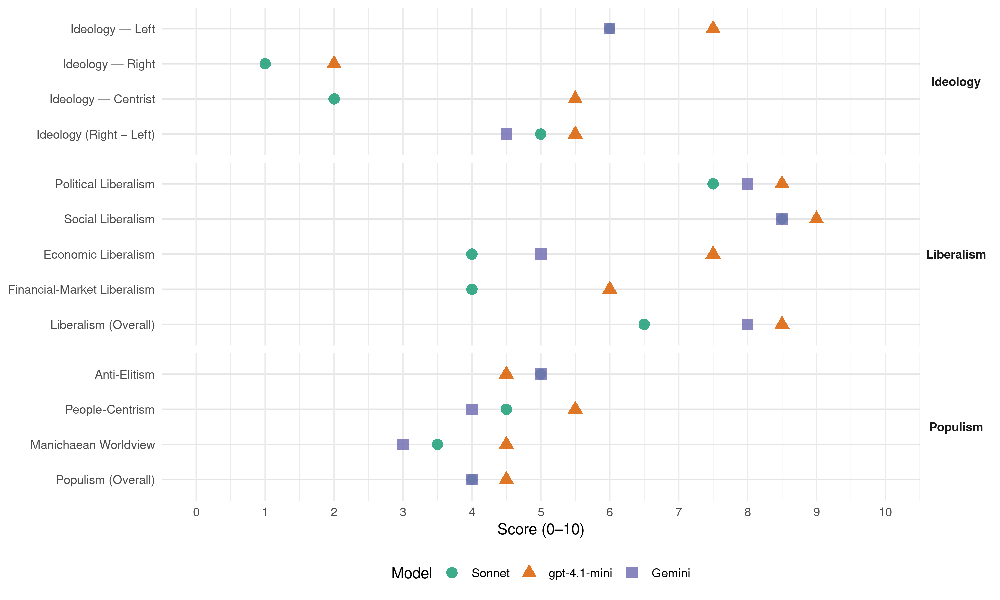

Labour (Ireland, 2002)
manifesto_id 53320_200205
Get full text: This site shows derived annotations and short verbatim quotes only. The full manifesto text is © Manifesto Project / WZB — obtain it via manifesto-project.wzb.eu using the manifesto_id above.
Headline scores
| Dimension | Sonnet | gpt-4.1-mini | Gemini |
|---|---|---|---|
| Populism (Overall) | 4.0 | 4.5 | 4.0 |
| Anti-Elitism | 5.0 | 4.5 | 5.0 |
| People-Centrism | 4.5 | 5.5 | 4.0 |
| Manichaean Worldview | 3.5 | 4.5 | 3.0 |
| Ideology (Right − Left) | 5.0 | 5.5 | 4.5 |
| Liberalism (Overall) | 6.5 | 8.5 | 8.0 |
| Political Liberalism | 7.5 | 8.5 | 8.0 |
| Social Liberalism | 8.5 | 9.0 | 8.5 |
| Economic Liberalism | 4.0 | 7.5 | 5.0 |
| Financial-Market Liberalism | 4.0 | 6.0 | – |
Evidence per dimension
Economic Liberalism
Gemini · score 5.0 · verified · chunk 1
“promote competition in the interests of consumer choice”
We will legislate to promote competition in the interests of consumer choice and better services.
gpt-4.1-mini · score 7.0 · verified · chunk 1
“Making Ireland a more competitive economy and a better place to live will require a Decade of Investment in public services and infrastructure, and a strong commitment to quality public services for all our citizens.”
Making Ireland a more competitive economy and a better place to live will require a Decade of Investment in public services and infrastructure, and a strong commitment to quality public services for all our citizens. Or we can continue to neglect public services and let them, and our quality of life with them, wither on the vine.
gpt-4.1-mini · score 8.0 · verified · chunk 2
“We will introduce legislation to curb the power to implement directives behind the back of the Oireachtas”
IRELAND AND EUROPE. … We will also bring in legislation to curb the power to implement directives behind the back of the Oireachtas, by removing the power to amend primary legislation under the European Communities Act, 1972, or any other regulatory power designed to implement EU law.
Sonnet · score 4.0 · verified · chunk 1
“competition in the insurance sector”
Tackle the cost of insurance, which is choking small business, by promoting competition in the insurance sector, reducing the cost of claims
Sonnet · score 5.0 · mixed · chunk 2
“competition and choice in the provision of legal services”
This move will abolish all legal aid waiting lists at one stroke, and will ensure competition and choice in the provision of legal services by way of civil legal aid.
Financial-Market Liberalism
gpt-4.1-mini · score 6.0 · verified · chunk 1
“Labour readily accepts the golden rule of public finances: the State should not borrow to fund current expenditure. It is reasonable, however, to borrow to invest in capital projects which give a return over time.”
Labour readily accepts the golden rule of public finances: the State should not borrow to fund current expenditure. It is reasonable, however, to borrow to invest in capital projects which give a return over time. This is the same logic which households and businesses apply.
Sonnet · score 4.0 · verified · chunk 1
“capital gains will be taxed on the same basis”
capital gains will be taxed on the same basis as income. The existing full exemption for the family home will be fully protected
Sonnet · score 4.0 · verified · chunk 2
“introduction of the Tobin tax”
We will work towards wide-ranging debt cancellation and the introduction of the Tobin tax. In addition we will work towards the promotion of fair trade
Political Liberalism
Gemini · score 8.0 · verified · chunk 1
“principles of freedom, equality, community and democracy”
As a political force our aim is to achieve a society founded upon the principles of freedom, equality, community and democracy.
Gemini · score 8.0 · verified · chunk 2
“fundamental reforms of the Constitution of Ireland to enhance the rights of citizens”
THE CONSTITUTION. We are committed to fundamental reforms of the Constitution of Ireland to enhance the rights of citizens and all those within our jurisdiction.
gpt-4.1-mini · score 8.0 · verified · chunk 1
“The Labour Party stands for a fundamental change in Irish society and for the protection of the dignity and liberty of the individual. As a political force our aim is to achieve a society founded upon the principles of freedom, equality, community and democracy.”
Labour believes that Ireland can be a better place to live, and we are determined to make it so. Labour believes that the State has a vital role to play in Irish society, as an agent of economic development, and as an engine of social change. The Labour Party stands for a fundamental change in Irish society and for the protection of the dignity and liberty of the individual.
gpt-4.1-mini · score 9.0 · verified · chunk 2
“We will make the European Convention on Human Rights a full part of Irish law”
FREEDOM AND HUMAN RIGHTS. Ireland, together with other UN member states, has agreed the Vienna Declaration on human rights which confirms that the protection of human rights is the first duty of Government. We will put the issue of human rights to the top of the agenda and will put in place an action plan to develop a human rights culture in this jurisdiction and in both parts of the Island. The outgoing Government’s pathetically weak Bill on the European Convention on Human Rights will be scrapped. A new Bill will be introduced making the Convention part of Irish law and fully enforceable in the Courts, subject of course to the Constitution but otherwise effective notwithstanding any statutory provision or rule of law to the contrary.
Sonnet · score 7.0 · verified · chunk 1
“principles of freedom, equality, community and democracy”
As a political force our aim is to achieve a society founded upon the principles of freedom, equality, community and democracy.
Sonnet · score 8.0 · verified · chunk 2
“ban corporate donations to politicians and political parties”
A statutory register of lobbyists will be introduced. Ban corporate donations to politicians and political parties. Scrap the increased election spending limits
Liberalism (Overall)
Gemini · score 7.0 · verified · chunk 1
“principles of freedom, equality, community and democracy”
As a political force our aim is to achieve a society founded upon the principles of freedom, equality, community and democracy.
Gemini · score 9.0 · verified · chunk 2
“fundamental reforms of the Constitution of Ireland to enhance the rights of citizens”
THE CONSTITUTION. We are committed to fundamental reforms of the Constitution of Ireland to enhance the rights of citizens and all those within our jurisdiction.
gpt-4.1-mini · score 8.0 · verified · chunk 1
“The Labour Party stands for a fundamental change in Irish society and for the protection of the dignity and liberty of the individual. As a political force our aim is to achieve a society founded upon the principles of freedom, equality, community and democracy.”
Labour believes that Ireland can be a better place to live, and we are determined to make it so. Labour believes that the State has a vital role to play in Irish society, as an agent of economic development, and as an engine of social change. The Labour Party stands for a fundamental change in Irish society and for the protection of the dignity and liberty of the individual.
gpt-4.1-mini · score 9.0 · verified · chunk 2
“We will make the European Convention on Human Rights a full part of Irish law”
FREEDOM AND HUMAN RIGHTS. Ireland, together with other UN member states, has agreed the Vienna Declaration on human rights which confirms that the protection of human rights is the first duty of Government. We will put the issue of human rights to the top of the agenda and will put in place an action plan to develop a human rights culture in this jurisdiction and in both parts of the Island. The outgoing Government’s pathetically weak Bill on the European Convention on Human Rights will be scrapped. A new Bill will be introduced making the Convention part of Irish law and fully enforceable in the Courts, subject of course to the Constitution but otherwise effective notwithstanding any statutory provision or rule of law to the contrary.
Sonnet · score 6.0 · verified · chunk 1
“freedom and equality are the birthright”
Freedom and equality are the birthright of all human beings, but those rights are jeopardised for a vast proportion of the population
Sonnet · score 7.0 · verified · chunk 2
“rights of citizens and all those within our jurisdiction”
We are committed to fundamental reforms of the Constitution of Ireland to enhance the rights of citizens and all those within our jurisdiction.
Anti-Elitism
Gemini · score 6.0 · verified · chunk 1
“squandered the boom on tax cuts for the privileged”
They blew the lot. They squandered the boom on tax cuts for the privileged, rather than improve quality of life
Gemini · score 4.0 · verified · chunk 2
“rushed and confusing regulations brought in by the outgoing Government”
driving will be made a specific offence by primary legislation replacing the rushed and confusing regulations brought in by the outgoing Government. SPORT.
gpt-4.1-mini · score 7.0 · verified · chunk 1
“The outgoing Government inherited an economy in the middle of an unprecedented boom, and an exchequer which was coming into surplus for the first time in 25 years. They blew the lot. They squandered the boom on tax cuts for the privileged”
The outgoing Government inherited an economy in the middle of an unprecedented boom, and an exchequer which was coming into surplus for the first time in 25 years. They blew the lot. They squandered the boom on tax cuts for the privileged, rather than improve quality of life for all, or invest in the future of our public services.
gpt-4.1-mini · score 2.0 · verified · chunk 2
“Labour is the only Party to have advanced a comprehensive programme to clean up Irish politics.”
RESTORING TRUST IN POLITICS. Labour is the only Party to have advanced a comprehensive programme to clean up Irish politics. In Government we will deliver on this programme. - Corporate donations to political parties will be banned.
Sonnet · score 6.0 · verified · chunk 1
“tax cuts for the privileged”
They squandered the boom on tax cuts for the privileged, rather than improve quality of life for all, or invest in the future of our public services.
Sonnet · score 4.0 · verified · chunk 2
“outgoing Government’s pathetically weak and ineffective Bill”
Make the European Convention on Human Rights a full part of Irish law, scrapping the outgoing Government’s pathetically weak and ineffective Bill.
Ideology — Centrist
gpt-4.1-mini · score 5.0 · verified · chunk 1
“The Labour Party stands for a fundamental change in Irish society and for the protection of the dignity and liberty of the individual. As a political force our aim is to achieve a society founded upon the principles of freedom, equality, community and democracy.”
Labour believes that Ireland can be a better place to live, and we are determined to make it so. Labour believes that the State has a vital role to play in Irish society, as an agent of economic development, and as an engine of social change. The Labour Party stands for a fundamental change in Irish society and for the protection of the dignity and liberty of the individual.
gpt-4.1-mini · score 6.0 · verified · chunk 2
“Our aim is to establish a new democratic contract with the people of Ireland.”
Building Democracy. The Challenge of Apathy and Cynicism. Labour recognises that at the heart of the current apathy and disaffection from participation in elections is a widespread feeling of alienation from democratic institutions. Our aim is to establish a new democratic contract with the people of Ireland.
Sonnet · score 2.0 · verified · chunk 1
“reclaim the space of citizenship”
The Labour Party’s answer to that cynicism is to reclaim the space of citizenship and political activity by advocating a strong, principled and ideological commitment
Sonnet · score 2.0 · verified · chunk 2
“new democratic contract with the people of Ireland”
Our aim is to establish a new democratic contract with the people of Ireland. We will ban corporate donations.
Ideology — Left
Gemini · score 7.0 · verified · chunk 1
“tax cuts for the rich”
But the outgoing administration has run down services for the people to finance tax cuts for the rich.
Gemini · score 5.0 · verified · chunk 2
“Corporate donations to political parties will be banned”
In Government we will deliver on this programme. - Corporate donations to political parties will be banned. - Political contributions by individuals
gpt-4.1-mini · score 8.0 · verified · chunk 1
“Labour believes that the State has a vital role to play in Irish society, as an agent of economic development, and as an engine of social change. The Labour Party stands for a fundamental change in Irish society and for the protection of the dignity and liberty of the individual.”
Labour believes that Ireland can be a better place to live, and we are determined to make it so. Labour believes that the State has a vital role to play in Irish society, as an agent of economic development, and as an engine of social change. The Labour Party stands for a fundamental change in Irish society and for the protection of the dignity and liberty of the individual.
gpt-4.1-mini · score 7.0 · verified · chunk 2
“We believe in equality of rights in practice, not simply on paper.”
EQUALITY AND LAW REFORM. The Labour Party’s core philosophy is based on an equal entitlement to respect and dignity for each and every member of the community. We believe in equality of rights in practice, not simply on paper. That is why we believe that intensive measures must be taken to ensure that groups on the margins of Irish society are allowed to share on a fair basis in the prosperity of the community and have access to the services necessary to live a dignified life.
Sonnet · score 7.0 · verified · chunk 1
“socially just distribution of resources”
The Labour Party is determined to see not simply development and wealth creation for its own sake, but also a socially just distribution of resources.
Sonnet · score 5.0 · verified · chunk 2
“benefits of economic growth have been shared anything but equally”
Under the outgoing administration, the benefits of economic growth have been shared anything but equally. Older people in particular have often little to look forward to
Ideology (Right − Left)
Gemini · score 6.0 · verified · chunk 1
“tax cuts for the rich”
But the outgoing administration has run down services for the people to finance tax cuts for the rich.
Gemini · score 3.0 · verified · chunk 2
“Corporate donations to political parties will be banned”
In Government we will deliver on this programme. - Corporate donations to political parties will be banned. - Political contributions by individuals
gpt-4.1-mini · score 6.0 · verified · chunk 1
“Labour believes that the State has a vital role to play in Irish society, as an agent of economic development, and as an engine of social change. The Labour Party stands for a fundamental change in Irish society and for the protection of the dignity and liberty of the individual.”
Labour believes that Ireland can be a better place to live, and we are determined to make it so. Labour believes that the State has a vital role to play in Irish society, as an agent of economic development, and as an engine of social change. The Labour Party stands for a fundamental change in Irish society and for the protection of the dignity and liberty of the individual.
gpt-4.1-mini · score 5.0 · verified · chunk 2
“Labour is the only Party to have advanced a comprehensive programme to clean up Irish politics.”
RESTORING TRUST IN POLITICS. Labour is the only Party to have advanced a comprehensive programme to clean up Irish politics. In Government we will deliver on this programme. - Corporate donations to political parties will be banned.
Sonnet · score 6.0 · verified · chunk 1
“anti-corporate elite, redistribution”
Unlike the civil war parties, Labour has not been compromised by cosy economic relationships with the representatives of global or national capital.
Sonnet · score 4.0 · verified · chunk 2
“equality of rights in practice, not simply on paper”
We believe in equality of rights in practice, not simply on paper. That is why we believe that intensive measures must be taken to ensure that groups on the margins
Ideology — Right
gpt-4.1-mini · score 2.0 · verified · chunk 2
“We will prohibit by statute the involvement of 17 year-old soldiers in combat tasks”
YOUNG PEOPLE. Labour will restore the needs of young people to the national agenda. … - Prohibit by statute the involvement of 17 year-old soldiers in combat tasks including peace enforcement and will ratify the protocol on this issue to the UN Convention on the Rights of the Child.
Sonnet · score 1.0 · verified · chunk 1
“rational immigration policy”
We will seek to develop three key policy strands – cultural harmony, a rational immigration policy, and a fair and speedy system for asylum
Sonnet · score 1.0 · verified · chunk 2
“a rational immigration policy”
We will seek to develop three key policy strands – cultural harmony, a rational immigration policy, and a fair and speedy system for asylum
Manichaean Worldview
Gemini · score 4.0 · verified · chunk 1
“compromised by cosy economic relationships”
Unlike the civil war parties, Labour has not been compromised by cosy economic relationships with the representatives of global or national capital.
Gemini · score 2.0 · verified · chunk 2
“There must be no more betrayal”
caused considerable anger among people with disabilities and their families and carers. There must be no more betrayal, no more meaningless gestures.
gpt-4.1-mini · score 6.0 · verified · chunk 1
“The outgoing Government inherited an economy in the middle of an unprecedented boom, and an exchequer which was coming into surplus for the first time in 25 years. They blew the lot. They squandered the boom on tax cuts for the privileged, rather than improve quality of life for all”
The outgoing Government inherited an economy in the middle of an unprecedented boom, and an exchequer which was coming into surplus for the first time in 25 years. They blew the lot. They squandered the boom on tax cuts for the privileged, rather than improve quality of life for all, or invest in the future of our public services.
gpt-4.1-mini · score 3.0 · verified · chunk 2
“There must be no more betrayal, no more meaningless gestures.”
The actions of the outgoing Government including the inhumane appeal of the Sinnott case, the shambolic Disabilities Bill, and the dishonest and meaningless Disabilities in Education Bill, have caused considerable anger among people with disabilities and their families and carers. There must be no more betrayal, no more meaningless gestures.
Sonnet · score 4.0 · verified · chunk 1
“This Government stands condemned”
This Government stands condemned, above all, however, for its negligence, and for its sheer lack of ambition.
Sonnet · score 3.0 · verified · chunk 2
“There must be no more betrayal”
have caused considerable anger among people with disabilities and their families and carers. There must be no more betrayal, no more meaningless gestures.
People-Centrism
Gemini · score 5.0 · verified · chunk 1
“put the citizen at the centre of public transport”
with long time-horizons. Labour in Government will: - Create a Greater Dublin Regional Authority… - Put the citizen at the centre of public transport policy by introducing
Gemini · score 3.0 · verified · chunk 2
“establish a new democratic contract with the people”
Our aim is to establish a new democratic contract with the people of Ireland. - We will ban corporate donations.
gpt-4.1-mini · score 6.0 · verified · chunk 1
“Labour believes that Ireland can be a better place to live, and we are determined to make it so. Labour believes that the State has a vital role to play in Irish society, as an agent of economic development, and as an engine of social change.”
Labour believes that Ireland can be a better place to live, and we are determined to make it so. Labour believes that the State has a vital role to play in Irish society, as an agent of economic development, and as an engine of social change. The Labour Party stands for a fundamental change in Irish society and for the protection of the dignity and liberty of the individual.
gpt-4.1-mini · score 5.0 · verified · chunk 2
“Our aim is to establish a new democratic contract with the people of Ireland.”
Building Democracy. The Challenge of Apathy and Cynicism. Labour recognises that at the heart of the current apathy and disaffection from participation in elections is a widespread feeling of alienation from democratic institutions. Our aim is to establish a new democratic contract with the people of Ireland.
Sonnet · score 5.0 · verified · chunk 1
“run down services for the people”
the outgoing administration has run down services for the people to finance tax cuts for the rich.
Sonnet · score 4.0 · verified · chunk 2
“restore the needs of young people to the national agenda”
Labour will restore the needs of young people to the national agenda. We seek to ensure that the needs of youth are taken into account in policy formation
Populism (Overall)
Gemini · score 5.0 · verified · chunk 1
“squandered the boom on tax cuts for the privileged”
They blew the lot. They squandered the boom on tax cuts for the privileged, rather than improve quality of life
Gemini · score 3.0 · verified · chunk 2
“There must be no more betrayal”
caused considerable anger among people with disabilities and their families and carers. There must be no more betrayal, no more meaningless gestures.
gpt-4.1-mini · score 6.0 · verified · chunk 1
“The outgoing Government inherited an economy in the middle of an unprecedented boom, and an exchequer which was coming into surplus for the first time in 25 years. They blew the lot. They squandered the boom on tax cuts for the privileged”
The outgoing Government inherited an economy in the middle of an unprecedented boom, and an exchequer which was coming into surplus for the first time in 25 years. They blew the lot. They squandered the boom on tax cuts for the privileged, rather than improve quality of life for all, or invest in the future of our public services.
gpt-4.1-mini · score 3.0 · verified · chunk 2
“Labour is the only Party to have advanced a comprehensive programme to clean up Irish politics.”
RESTORING TRUST IN POLITICS. Labour is the only Party to have advanced a comprehensive programme to clean up Irish politics. In Government we will deliver on this programme. - Corporate donations to political parties will be banned.
Sonnet · score 5.0 · verified · chunk 1
“politics of the short-term and the quick buck”
The politics of Harney and McCreevy are the politics of the short-term and the quick buck.
Sonnet · score 3.0 · verified · chunk 2
“outgoing Government has undone our good work”
Before the last General Election, Labour had begun the process of reforming Local Government. But the outgoing Government has undone our good work.
Social Liberalism